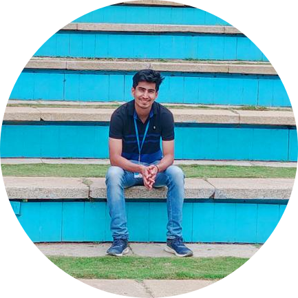

|

|
Harsh Vardhan MehtaI am a Project Engineer in Wipro Limited. Working as a Web Developer in Lloyds Bank's Home Insurance Project. |
Phone: +91 – 7310910101
Email: harshvardhanmht7@gmail.com
LinkedIn: https://www.linkedin.com/in/harsh-vardhan-mehta-441111152/
check out my sample website
| year | Institute | percentage/C.G.P.A |
|---|---|---|
| 2015-2019 | Bachelor of Technology, Computer Science & Engineering Govind Ballabh Pant Institute of Engineering and Technology, Pauri Garhwal, Uttarakhand. | 71.1% |
| 2014 | 12th (Kendriya Vidyalaya Almora) Central Board of Secondary Education | 89.8% |
| 2012 | 10th (Kendriya Vidyalaya Almora) Central Board of Secondary Education | 8.4 C.G.P.A. |
| Languages | C++ , C , core java , python , C# |
|---|---|
| Web Skills | Javascript , Jquery , ASP.NET , ASP.NET Core , ASP.NET MVC , HTML , CSS , Bootstrap , Node.js , Microsoft Entity Framework , ADO.NET , PHP |
| Database | My SQL , MongoDB |
| Other Skills | Android Development |
Project Engineer Wipro ( Bangalore) ( Nov-2019 - Present )
Web Developer Lloyds Bank (Feb-2020 - Present )